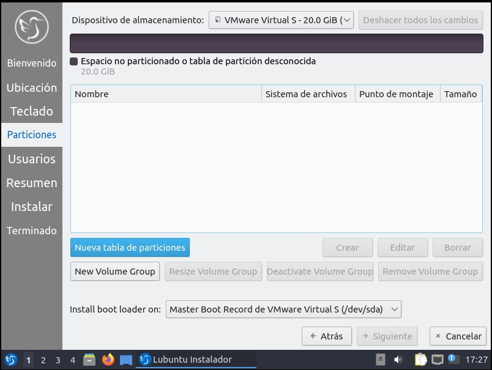
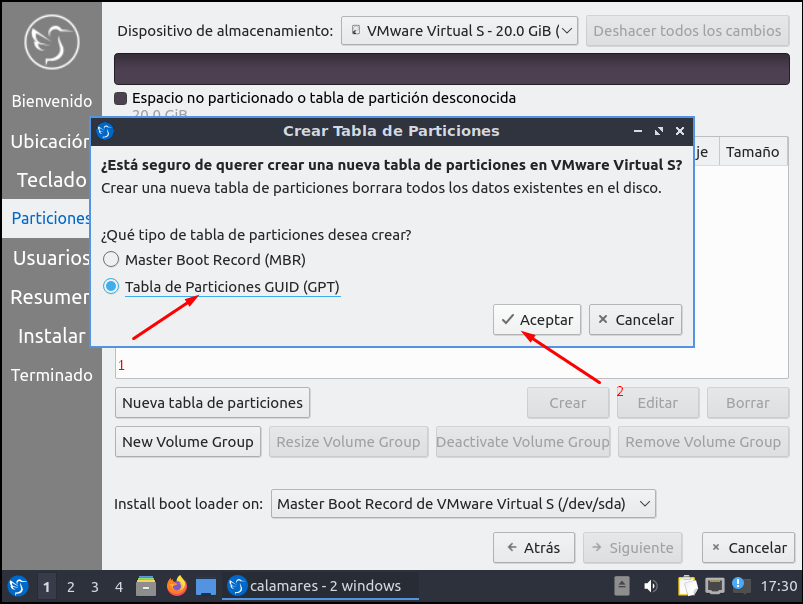
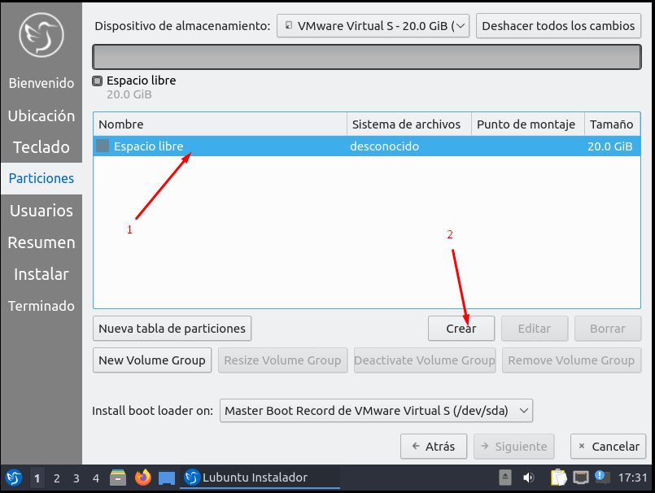

Creacion de Particiones Manuales en Linux

Particion Manual Por instalacion de Linux
En el primer paso nos encontramos con la pantalla pricipal de particionado de una intalacion de Linux
En caso de no tener una tabla de particiones, Crearemos una nueva en formato GPT
El "espacio libre" y le click en el boton "Crear"
